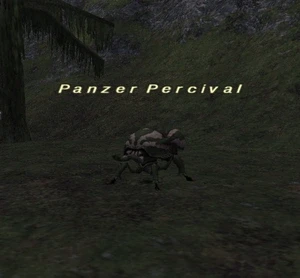

Level 75 reference · Zenith rules
|
Job: Notorious Monster |
 |

|
Zone |
Level |
Drops |
Steal |
Spawns |
Notes | ||||||
|
25-26 |
|
|
2 |
| |||||||
|
HP = Detects Low HP; M = Detects Magic; Sc = Follows by Scent; T(S) = True-sight; T(H) = True-hearing JA = Detects job abilities; WS = Detects weaponskills; Z(D) = Asleep in Daytime; Z(N) = Asleep at Nighttime | |||||||||||
Notes:
- Located around either J-5 or L-6/7
- Lottery Spawn of Stag Beetles, possibly 2 hour wait between spawns
- Panzer Percival's placeholder is the first beetle of either group on widescan.
- The placeholder will only spawn at one location at a time.
- J-5 has 5 beetles in the group when the placeholder is present.
- L-6/7 has 4 beetles in the group when the placeholder is present.
- Seems to have a very unpredictable spawn time - but the general concensus seems to be around 2 hours. Could be 30 minutes, or 4 hours though.
- Killable by 1 level 40 player
- Has been known to pop within 15 minutes however popped in the opposite location.
- Has been known to pop twice in a row (without killing a placeholder) in the opposite location.
Adapted from Eden Wiki: Panzer Percival · Contributors and history · CC BY-SA 4.0. Revision 44695. Layout, links and optional background text adapted for Zenith.